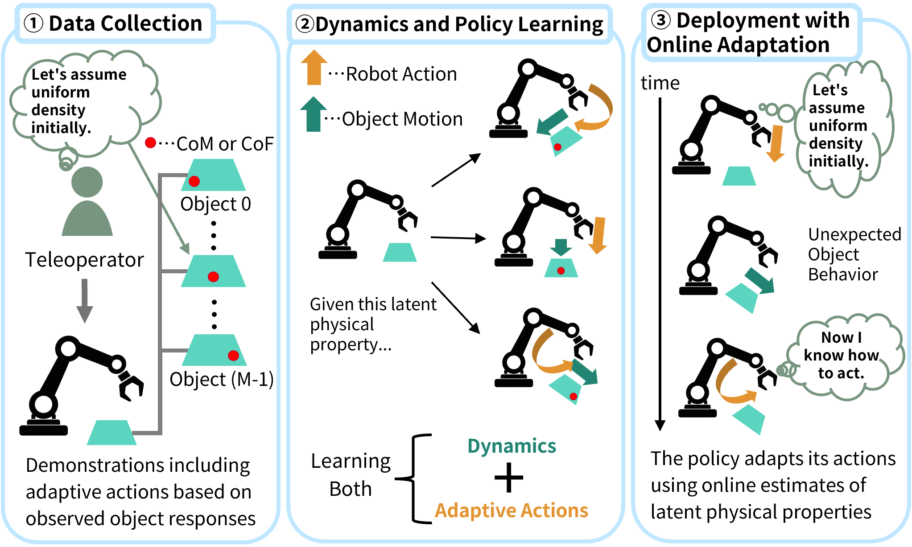
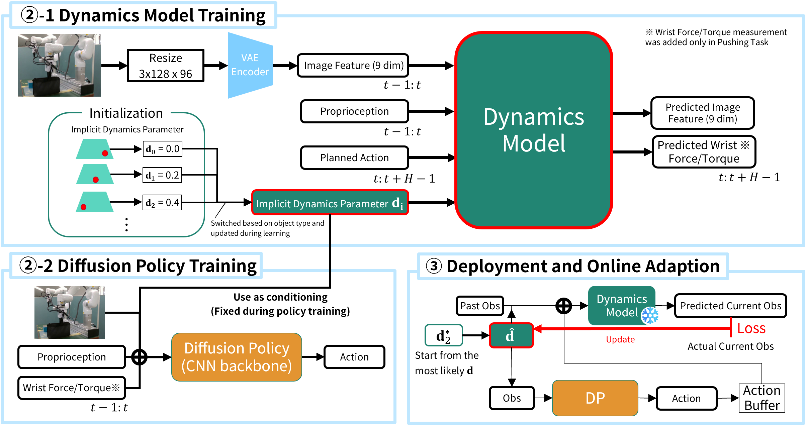
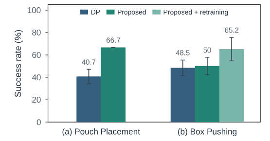
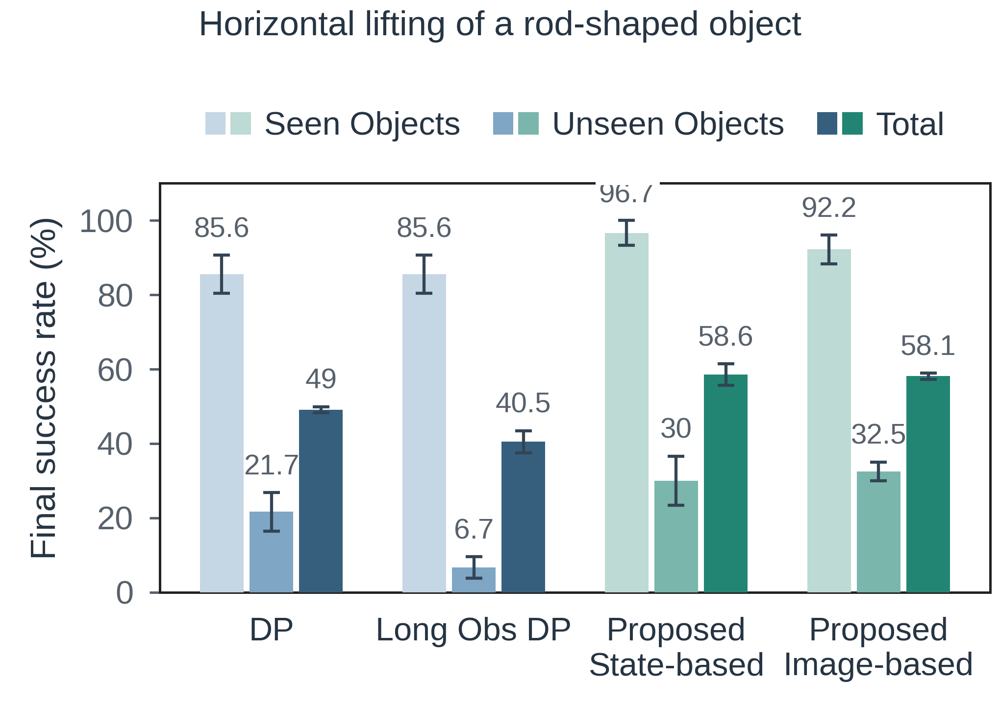
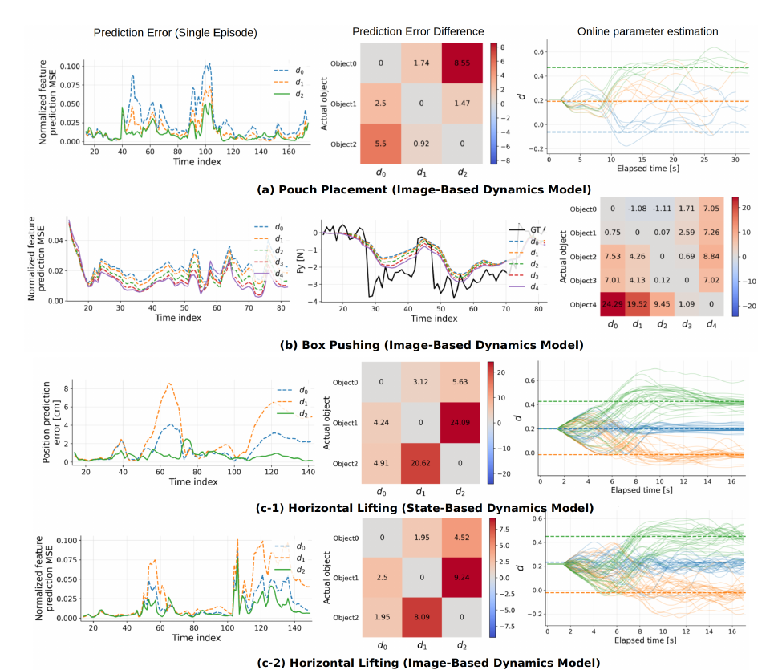

Online Adaptation to Latent Physical Properties for Learning from Demonstration
Kotaro Kajitsuka1,2, Masaki Murooka2, and Fumio Kanehiro1,2
1University of Tsukuba 2AIST

How can a robot adapt to visually identical objects with different physical properties?
Learning latent physical properties from demonstrations and updating them online to guide manipulation.
Video
Abstract
Manipulating visually identical objects with different physical properties requires adapting actions based on information acquired through interaction. We address the problem of learning from demonstrations how to adapt manipulation actions, such as regrasping and changing contact locations, based on physical-property information acquired during interaction. To this end, we propose a learning-from-demonstration method that learns latent representations of physical properties needed to predict object responses and conditions a policy on online estimates of these representations. A dynamics model and object-specific latent representations are jointly learned from demonstrations that include behaviors adapting to the objects’ physical properties, and the learned representations are then used to condition an imitation policy. During execution, the dynamics model and policy weights remain fixed, while the latent representation is updated based on the discrepancy between predicted and actual observations, allowing interaction with the object to inform action generation. Real-world and simulation experiments with objects whose centers of mass differ demonstrate that online adaptation through latent representations of physical properties improves task success rates.
Learning and Online Adaptation
Demonstrations supervise both prediction of object responses and the actions that adapt to them.

1. Learn object representations
A VAE encodes images. A dynamics model predicts future visual features and proprioception from recent observations, planned actions, and a learnable representation for each object. For Box Pushing, wrist force and torque are also prediction targets.
2. Train the policy
The demonstrations are annotated with their learned object representations. A Diffusion Policy learns actions from observation history and the corresponding representation.
3. Adapt during execution
The online estimate starts from a plausible reference representation. Prediction error updates that estimate while model and policy weights remain fixed; the policy uses the updated estimate to select subsequent actions.
Experiments: Task Setup
Teleoperation Data Collection
After inserting the weight, data collection begins. The teleoperator first attempts the task assuming a uniform density, then adapts their actions to the object's physical properties as they become known.
Experiments and Results
Objects differ in center of mass (CoM); the real pushing task also uses objects with different centers of friction. Demonstrations cover selected configurations, and Box Pushing and Horizontal Lifting evaluate additional CoM locations.
Real-robot manipulation
Pouch Placement: the proposed method reaches 66.7% success, compared with 40.7% for standard Diffusion Policy. For Box Pushing, the methods trained only on demonstrations have comparable overall success. Retraining the VAE and dynamics model with rollout data raises success by about 15 percentage points while keeping the policy fixed.

Real-robot task success. Retraining improves Box Pushing success while the policy remains fixed.
Simulation results
The method has a higher mean overall success rate than standard Diffusion Policy and its long-history variant with either state-based or image-based dynamics. On unseen CoM locations, both proposed variants perform better than the baselines, but success remains around 30%, leaving generalization challenging.

Pouch Placement: Baseline vs. Proposed Method
Representative 2× recordings from the real-robot pouch task.
Diffusion Policy failure
Pouch placed in the frame
Box Pushing: Baseline vs. Proposed Method
A comparison of the baseline failure and a paired proposed-method example.
Baseline · failure example
Baseline DP fails without re-touching.
Proposed method
Proposed + Retraining succeeds after re-touching.
Visualization of Online Adaptation
Simulated rollout
Online parameter estimate
The estimate changes as the observed object response differs from the initial prediction.
For visualization, predicted future observations are decoded into images; the model itself predicts future visual features. The clip shows decoded frames about 1.5 s ahead and online estimates of Implicit Dynamics Parameter.
The dynamics-model evaluation assesses whether learned representations capture object-dependent responses and can be estimated online. The left panels compare prediction errors on held-out demonstrations using the actual object's representation and alternative representations. Across validation data, the matching representation generally lowers mean prediction error for Pouch Placement and Horizontal Lifting, but not consistently for Box Pushing; the Box Pushing results also include force prediction. The right panels show online estimates for rollouts on seen objects alongside the learned representations. For unseen objects with intermediate weight positions, the paper identifies convergence between the corresponding learned representations as desirable.

BibTeX
The manuscript is supplied as a submission draft. Venue and publication details are left unspecified pending confirmation.
@unpublished{kajitsuka2026onlineadaptation,
title = {Online Adaptation to Latent Physical Properties for Learning from Demonstration},
author = {Kajitsuka, Kotaro and Murooka, Masaki and Kanehiro, Fumio},
year = {2026},
note = {Manuscript submitted for SII 2027}
}